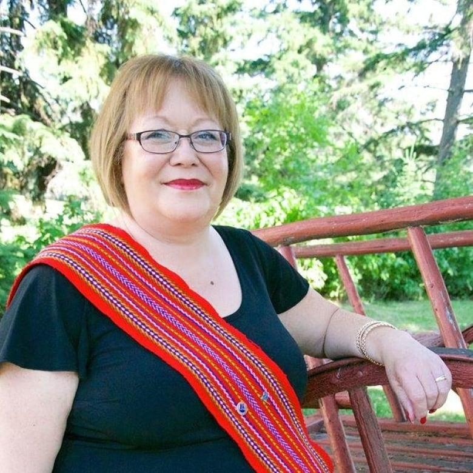

I do not want to talk about what once was, rather what can be.
Decades ago, the Métis people embarked on what they called buffalo hunt. These buffalo hunts were the flagship activity to secure food and resources, but it was deeper than that. These hunts sustained communities and reflected how they governed themselves. To mark the hunt has begun, Métis people would raise the flag, to let all participating families know that it was time to move.
Image of a Buffalo Hunt
While all the men would go out and start hunting. Behind the scenes, the Métis mothers and aunties orchestrated the entire operation. They decided how groups were formed, planned logistics, and ensured the hunt ran smoothly. They were the quiet leaders of movement and strategy. Instead of leading the pack into battle, but rather they were the leader of communities and movements to help ensure the growth of these communities.
In the current day, absolutely nothing has changed. Organizations like Les Femmes Michif Otipemisiwak, led by Melanie Omeniho. Show that strong leadership from women like her isn’t gone, just overlooked. Métis women have always been at the centre of decision making and community growth. “Métis women are counsellors, mediators, ethics advisors… responsible for protecting children, stopping feuds, and working for initiatives that strengthen the community “.(“The Origins of Métis Governance and Customary Law with a discussion of Métis and legal traditions”,13) This is a resurgence in motion, one community at a time. Melanie empowers many women to find their voice that societies had once striped from them.
Melanie Omeniho
Governments have always been slow to help Métis communities. And when they do, there are restrictions, of having to prove Métis status. One of the biggest barriers is the constant need to prove one's status. An example of this is the Powley test. Which is based on three key criteria, self-identification, ancestral connection, and community acceptance. This was intended to protect Métis rights but in practice it creates a system where constant justification is necessary. Being Métis cannot just be measured upon how much of your ancestry percentage is made up of Métis individuals.
From the video “Being Métis” there is a quote that really stood out to me “ Métis comes from the Latin word of mixed peoples.. Because you are a mix of first nations and european… we declared as a distinct people. Métis does not exist as just mixed people…[but rather] with their own history and identities.” Métis individuals are not just people of mixed ethnicities, rather they are a unique society in their own rights, with their own distinct culture and worldviews.
Strong leadership qualities like future vision, kindness, and dedication. These traits aren’t always found in history books or political organizations. They can show up in your day to day life. I find these traits in a woman I know, through Jasmine. In High school Jasmine had worked as a classroom assistant for those with cognitive disabilities. Every day, she would come visit them, turning their educational struggle into an enjoyable education experience almost as if they were simply friends hanging out. She had ignored all stigma and instead decided to show compassion and foster a special community. She had helped individuals find their voice, even when it wasn't easy. This compassion and strong leadership reminds me of all the Métis female leaders who came before her, the ones that had gone above and beyond to nurture communities, and set foundations that will not only help her community but those after. She serves as that living example I see every day.
In our current society, our flags do not fly high. Every day, Métis women are not only fighting for individual women's rights, but as well as the rights of a...
whole nation,
whole community,
whole kinship,
Who may not find union through blood, rather by community. Through women like Melanie Omeniho, Resurgence is not only possible, but it is currently on the rise. So that woman like her, and the many women after her will not be overlooked, rather they will be heard and seen for the leadership qualities they have. So let us hold that flag a little higher every day, to signal that resurgence is on the rise.
Métis Flag